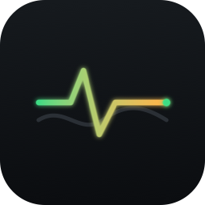

Monitorizare resurse & diagnosticare DaVinci Resolve, în timp real.
Cod nativ (SwiftUI / WinUI 3), fără Electron. Polling adaptiv 1–3s, FSEvents / FileSystemWatcher.
RAM, Swap și semnale din log-urile DaVinci — verde/galben/roșu, fără tabele.
Cmd+Shift+M pe macOS, Ctrl+Shift+M pe Windows.
Localizare completă din prima versiune.
Din rădăcina repo-ului, pe mașina Windows:
powershell -ExecutionPolicy Bypass -File scripts\build-windows-exe.ps1
Rezultă dist\MediaFlowMonitor-Windows-1.0.0.zip, cu gdc-manifest.json inclus.